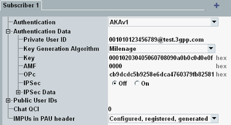

Perform the following steps to register a DUT to the IMS server. The IMS registration is a prerequisite for voice over IMS and SMS over IMS.
Initial situation: The DUT is switched off and connected to an RF port. There is no downlink signal. The IMS server is set to default settings and switched off. The GUI shows the "IMS" tab of the "Data Application Control" dialog.
Press the "Subscriber" hotkey.
A dialog box opens. Configure a subscriber profile as follows (e.g. "Subscriber 1"):
Enter the private user ID of your DUT.
Configure the authentication settings compatible to your DUT.
Enter all public user IDs of your DUT.
For "Subscriber 1", this step is optional, as this profile is used for all unknown public IDs.

Press OK.
Press [ON | OFF] or right-click the "IMS Service" softkey and click ON.
The IMS service is started. Wait until the "IMS Service" softkey displays the state "ON".

Configure the signaling application that you want to use, for example the LTE signaling application. Usually, you must explicitly enable data tests in the signaling application. For details, refer to the documentation of the signaling application.
Let the DUT register/attach to the signaling application.
Afterwards, the DUT automatically registers also to the IMS server. You can check the successful registration in the "General IMS Info" area on the IMS tab.

The displayed URI is generated automatically and registered in addition to the public user IDs configured for the subscriber profile. Each registration with a different IP address gets a unique URI, even if the same subscriber profile is used.